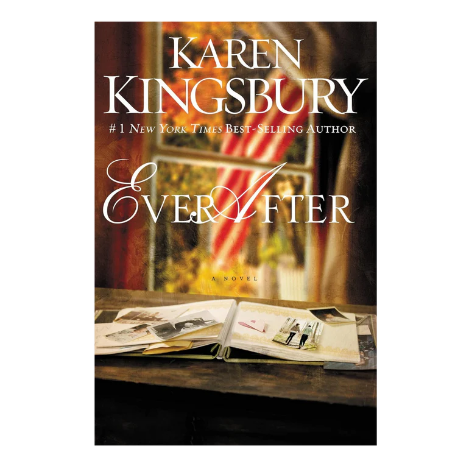

Even Now
Even Now by Karen Kingsbury is a Christian romance novel following Lauren Gibbs, a war correspondent, and Shane Galanter, who are separated by lies and years of distance after a teen pregnancy and a faked death. The story, which features themes of faith and, for many, is, a testament to God's love, chronicles their search for redemption and reconciliation with the daughter they gave up.

Even After
Ever After by Karen Kingsbury is the moving, emotional sequel to Even Now, following Emily Anderson, who falls in love with Army reservist Justin Baker while her parents, Lauren and Shane, struggle to reconcile their opposing views on faith and the Iraq War. When tragedy strikes, they must overcome deep divisions to find hope and healing.
Even Now and Even After Two In One
Both the books in one! A bonus excerpt in the two in one book!